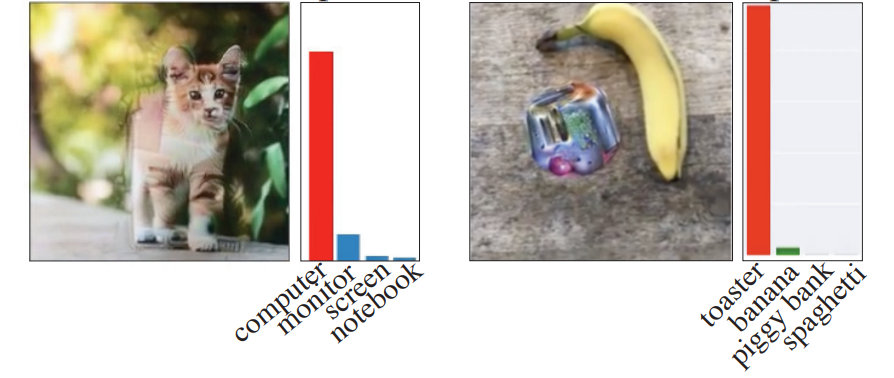
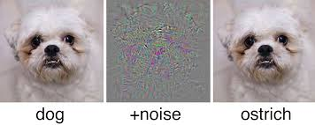
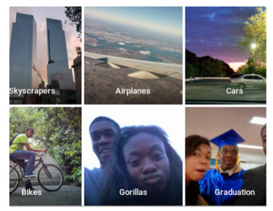
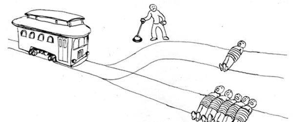

class: center, middle # Introduction au Deep Learning ## Limite et Ethique ### Evann Courdier 18 juin 2019 .affiliations[   ] --- # Plan de la journée ### En théorie... - .grey[Introduction: Deep Learning - Pourquoi et où ?] - .grey[Réseau de neurones: Description et entraînements] - .grey[NLP: Description d'un système d'embedding de mot] - .grey[Vision: Introduction aux réseaux neuronnaux convolutionnels] - Le deep: limite et éthique ### .grey[En pratique...] - .grey[Implementation de word2vec en PyTorch] - .grey[Utilisation d'un CNN pré-entrainé] --- ## Limite Tromper les réseaux - Les réseaux convolutionnels ne sont pas infaillible et peuvent être "facilement" attaqués .center[  <br/> ] --- ## Limite Tromper les réseaux - En ajoutant un bruit "bien construit" à une image de chien, on trompe le réseau qui pense qu'il s'agit d'une autruche. .center[  <br/> ] - Danger ! Veut on les utiliser dans les avions, la médecine, la conduite automatique ? --- ## Ethique - Biais - Biais dans les datasets d'apprentissage -- .center[ <img src="images/deep_hot.png" style="width: 600px;" /> <br/> ] ??? Exemple: Tank avec nuages Exemple: crédit banque => apprendre nom d'homme ont plus de crédit Exemple: Beautifier => blanc --- ## Ethique - Biais - Biais dans les datasets d'apprentissage .center[  <br/> ] ??? Exemple: Tank avec nuages Exemple: crédit banque => apprendre nom d'homme ont plus de crédit Exemple: Beautifier => blanc --- ## Ethique - Ethique Humaine - Dilemne du tramway .center[  <br /> ] ??? Une autre limite du deep learning touche aux limites de l’éthique humaine, lorsqu’un choix se présente sans issues favorables. Comment prendre une décision lorsqu’aucune alternative ne paraît bonne ou lorsqu’elles ne sont pas comparables ? Cette question a été illustrée par le dilemme du tramway, où schématiquement l’opérateur doit choisir à qui il doit accidentellement ôter la vie, aucune alternative d’itinéraire immédiat ne pouvant éviter une collision avec des passants. Dans le cas du deep learning, et notamment de la conduite autonome de véhicule, l’opérateur est une machine. Cette machine suppose un algorithme de prise de décisions. Or, dans ce cas, il est très délicat d’expliciter une politique de choix, à la fois d’un point de vue technique – il faudrait couvrir exhaustivement toutes les situations et leurs choix associés –, et d’un point de vue éthique – par exemple aussi horrible qu’est cette question sans bonne réponse : « comment choisir entre l’alternative d’écraser une femme enceinte ou un groupe de 5 retraités ? ». Cette double difficulté n’a pas encore été solutionnée. --- ## Ethique - Mauvais usage de l'IA - Deep fake : Face Swap in Videos -- - Utilisation à des fins militaires -- - Surveillance des citoyens .center[ <br /> ]